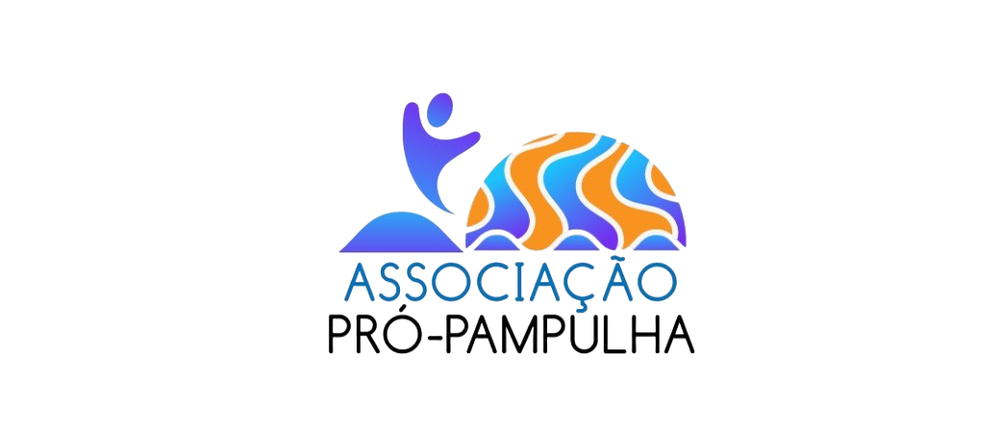

A Pró-Pampulha - Associação de Moradores e Empreendedores dos bairros São Luiz e São José foi criada, oficialmente, no dia 𝟭𝟲 𝗱𝗲 𝗷𝘂𝗹𝗵𝗼 de 2024, dia que comemoramos os 8 anos da conquista do título de 𝗣𝗮𝘁𝗿𝗶𝗺ô𝗻𝗶𝗼 𝗠𝘂𝗻𝗱𝗶𝗮𝗹, conferido pela 𝗨𝗻𝗲𝘀𝗰𝗼 em julho de 2016. Moradores e empreendedores da região, altamente engajados e atuantes formam um grupo competente, visionário, empático e sensibilizado com as demandas da região, respeitando as opiniões, e promovendo debates éticos e transparentes entre os VIZINHOS.
QUERO ME ASSOCIAR